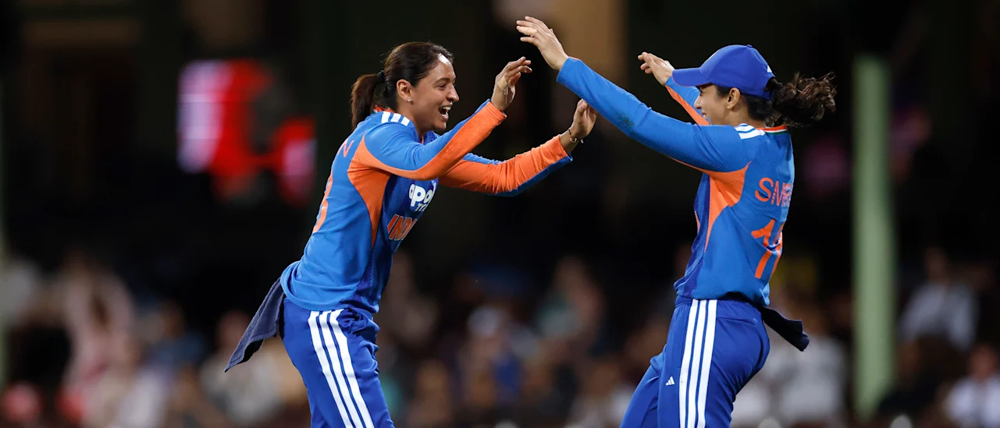

India Women’s Squad for ICC T20 World Cup 2026 Announced

The Board of Control for Cricket in India (BCCI) has officially announced the Indian women’s squad for the ICC Women’s T20 World Cup 2026. With a strong blend of experienced players and young talents, Team India is gearing up for a historic campaign.
Captain: Harmanpreet Kaur
Vice-Captain: Smriti Mandhana
Tournament: ICC Women’s T20 World Cup 2026
Venue: England
Dates: June 12 – July 5, 2026
Vice-Captain: Smriti Mandhana
Tournament: ICC Women’s T20 World Cup 2026
Venue: England
Dates: June 12 – July 5, 2026
🇮🇳 Full India Women Squad 2026
- Harmanpreet Kaur (Captain)
- Smriti Mandhana (Vice-Captain)
- Shafali Verma
- Jemimah Rodrigues
- Renuka Thakur
- Deepti Sharma
- Richa Ghosh (WK)
- Sree Charani
- Yastika Bhatia (WK)
- Nandni Sharma
- Arundhati Reddy
- Radha Yadav
- Shreyanka Patil
- Kranti Gaud
- Bharti Fulmali
Key Highlights
- Strong batting lineup led by Mandhana and Shafali
- All-round strength with Deepti Sharma
- Balanced bowling attack
- Mix of youth and experience
Group Stage Opponents
- Australia
- Pakistan
- South Africa
- Bangladesh
- Netherlands
Can India Win Their First T20 World Cup?
India has come close in previous editions, including a runner-up finish in 2020. With a strong squad and experienced leadership, 2026 could finally be the year India lifts their first ICC Women’s T20 World Cup trophy.
Final Thoughts
The squad announcement reflects India’s determination to dominate global women’s cricket. Fans are excited and hopeful as Team India begins its journey in England.